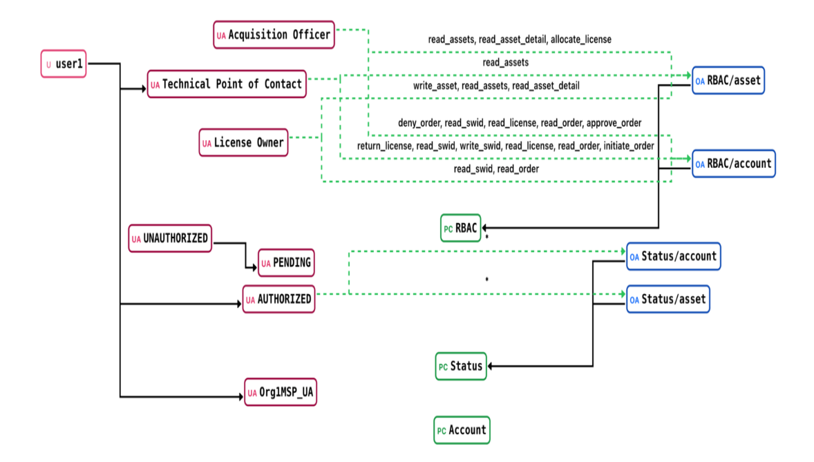

BloSS@M relies on blockchain technology as a foundational mechanism for maintaining a shared,
verifiable record of software asset lifecycle information across organizational boundaries.
A blockchain is a distributed digital ledger that records transactions in a way that makes it
resistant to unauthorized modification. These transactions are grouped into blocks and are cryptographically linked
to preceding blocks, forming an append-only record that enables the detection of unauthorized changes.
Blockchain technology helps ensure that information is trustworthy, secure, and resistant to tampering. Each transaction
is protected through cryptographic techniques that verify its authenticity and integrity. Once a transaction is validated
and added to the blockchain, it becomes part of a permanent record that cannot be modified or deleted without
leaving evidence of the change. This allows organizations to share and rely on information with greater confidence, even when
participants do not fully trust one another or operate under a single governing authority.
To protect sensitive information, blockchain platforms can incorporate encryption and access control capabilities. These controls
help determine who can view, submit, or manage specific data, ensuring that stakeholders only have access to information appropriate
to their roles. Such capabilities are especially valuable in IT, operational technology (OT), and federal environments, where multiple
organizations often collaborate while maintaining different responsibilities and levels of authority.
Blockchain networks are designed to be distributed across multiple participants, with each node maintaining a synchronized copy of the
ledger. This decentralized structure improves system resilience, availability, and fault tolerance by avoiding reliance on a single
organization or system. Consensus processes allow participating nodes to collectively verify and agree on transactions before they are permanently
recorded, helping maintain the accuracy and consistency of the shared ledger.
Blockchain applications use smart contracts to automate and enforce the rules and processes that support business function.
These smart contracts are deployed to the network as executable code and help ensure that transactions and data updates are handled consistently
across all participants. To maintain trust and security, changes to the deployed code typically require approval from designated network members,
reducing the risk of unauthorized or malicious modifications.
Common blockchain attributes:
Introduction to Blockchains
Permissioned Blockchains
Blockchain systems generally fall into two categories: permissionless and permissioned architectures. A permissionless blockchain allows any participant to join the network without requiring approval from a central authority. Users can typically access the ledger and submit transactions anonymously, with trust established through consensus protocols such as Proof of Work (PoW). Although this approach promotes openness, transparency, and decentralization, it can also introduce challenges related to scalability, computational overhead, and data privacy.
By contrast, a permissioned blockchain limits network access to verified participants. Only approved individuals or organizations are granted the ability to view ledger data or initiate transactions. This controlled access framework provides greater oversight of data sharing and transaction processing, resulting in stronger privacy protections, improved data integrity, and more efficient operations.
Permissioned managed blockchains (PMBs) build upon the permissioned model by adding administrative capabilities such as governance controls, identity and access management, and system oversight functions. As a result, PMBs often provide several advantages over permissionless blockchain networks including:
Higher scalability and performance
Achieved by utilizing cryptographic proof of authorization rather than computationally intensive consensus algorithms such as PoW
Reduced transaction costs
Lower resource consumption and streamlined network operations
Granular access control
Fine-grained permissions to be applied to the user, organization, or channel level
Configurable consensus mechanisms
Enable adaptation to specific operational or compliance requirements
Simplified governance and onboarding processes
Clearly defined participant roles and controlled membership management
Resilience against consensus manipulation
Membership and transaction validation governed by authorized entities rather than arbitrary network participants
Role-based management interfaces
Facilitated by system oversight and maintenance
What Is NGAC?
Next Generation Access Control (NGAC) is a NIST-developed, ANSI-standardized Attribute-Based Access Control (ABAC) framework that uses a graph structure to represent complex access control policies and the relationships between users, objects, and their attributes. NGAC is implemented within the smart contracts of the blockchain's code to enhance the access control to the data generated by BloSS@M. Unlike traditional role-based models, NGAC is designed to express and enforce fine-grained, dynamic permissions at scale, making it well-suited for federal and multi-agency IT environments. In BloSS@M, NGAC is embedded directly into the smart contracts of the blockchain chaincode, enforcing access decisions at the point of data interaction across the distributed ledger.
NGAC Functional Components
NGAC defines a standardized architecture composed of six distinct components, each playing a specific role in ensuring access control policies are consistently enforced, administered, and audited.
Policy Element Types
NGAC represents access control policies as a graph. Five node types form the building blocks of every policy:
User
Human or non-person entities (e.g., automated systems, services) that request access to resources.
Object
Logical representations of physical or digital resources, regardless of format or location.
User Attribute
Characteristics applied to users (such as role, clearance level, or agency membership) and are used to drive access decisions.
Object Attribute
Properties assigned to objects that determine classification and applicable access rules.
Policy Class
High-level domains defining the overarching access control model in effect, such as Role-Based Access Control (RBAC) or Discretionary Access Control (DAC).
Relationship Types
Edges in the NGAC policy graph define how elements relate to one another. Four relationship types give administrators precise control over how access is granted, restricted, and triggered.
- Assignment — Builds hierarchy by linking elements, grouping users and objects under attributes, and nesting attributes within policy classes to define access domains.
- Association — Connects a user attribute to an object attribute, granting access rights from the source to the target. Represented as a directed edge in the policy graph.
- Prohibition — Explicitly denies access rights. Evaluated after associations, allowing administrators to carve out precise exceptions within broader permissions.
- Obligation — Specifies event patterns and the administrative actions triggered when those events occur, managed by the Event Processing Point (EPP).
NGAC in BloSS@M
By embedding NGAC directly into blockchain smart contracts, BloSS@M enforces fine-grained, policy-driven access control at every point of data interaction — ensuring that sensitive software asset information is visible only to those authorized to see it, across every participating agency.

Two Private Channels for Access Control
BloSS@M's permissioned blockchain requires two distinct private channels, each governed by their own set of smart contracts that implement NGAC:
- Authorization Channel: Dedicated to the assessment and authorization (A&A) process, where peer nodes prove and continuously maintain their security posture in line with FISMA requirements
- Assets Channel: Focused on the core business functions of BloSS@M to support the implementation of its operational and technical capabilities
The network is organized into those two primary channels with their distinct responsibilities. The authorization channel is responsible for handling automated security evaluations, managing member onboarding and authorization, and enforcing cATO-related processes. The asset channel, in contrast, provides access to BloSS@M functionality, enabling participants to locate and evaluate software assets, securely obtain software licenses, and oversee those assets throughout their lifecycle.
BloSS@M operates through a designated service provider member that establishes these channels and applies the NGAC policy framework. This member assigns the required permissions within both channels to organizations as they join the network and deploy their own peer nodes.
Because secure business transactions depend on trusted, participants, trust is established through automated authorization, accreditation, and continuous authority to operate (C-ATO) mechanisms. As a result, the authorization channel serves as the governance layer for the asset channel, determining which peer nodes are authorized to participate in and validate business transactions.